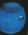
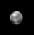

| Mercurio | |
 | Venus | |
 | La Tierra | |
 | Marte | |
 | Jupiter | |
 | Saturno | |
 | Urano | |
|  | Neptuno | |
|  | Plutón | |
| Deja tu opinión | ||
Nuestro Sistema Solar consiste en una estrella mediana que llamamos el Sol y los planetas Mercurio, Venus, Tierra, Marte, Júpiter, Saturno, Urano, Neptuno, y Plutón. Incluye: los satélites de los planetas, numerosos cometas, asteroides, y meteoroides; y el medio interplanetario. El Sol es la fuente más rica de energía electromagnética (principalmente en forma de luz y calor) en el Sistema Solar. El vecino estelar conocido mas cercano al Sol es una estrella enana roja llamada Proxima Centauri, y está a una distancia de 4.3 años luz.
El Sistema Solar entero, junto con las estrellas locales visibles en una noche clara, orbita en el centro de nuestra galaxia hogar, que es un disco espiral de 200 billones de estrellas al cual llamamos la Vía Láctea. La Vía Láctea tiene dos pequeñas galaxias orbitándose cercanamente, las cuales son visibles desde el hemisferio sureste. Éstas son llamadas la Nube Magallánica Mayor y la Nube Magallánica Menor. La galaxia grande cercana es la Galaxia Andrómeda. Es una galaxia en espiral como la Vía Láctea pero es 4 veces más densa y está a 2 millones de años luz de distancia. Nuestra galaxia, una de los billones de galaxias conocidas, está viajando a través del espacio intergaláctico. Los planetas, muchos de los satélites de los planetas y los asteroides giran alrededor del Sol en la misma dirección, en órbitas casi circulares. Cuando se observa desde lo alto del polo norte del Sol, los planetas orbitan en una dirección contraria al movimiento de las manecillas del reloj.
Los planetas orbitan al Sol en ó cerca del mismo plano, llamado el eclíptico. Plutón es un caso especial ya que su órbita es la más inclinada (18 grados) y la más elíptica de todos los planetas. Por esto, por parte de su órbita, Plutón es más cercano al Sol que Neptuno. El eje de rotación de muchos de los planetas es casi perpendicular al eclíptico. Las excepciones son Urano y Plutón, los cuales están inclinados hacia sus lados.